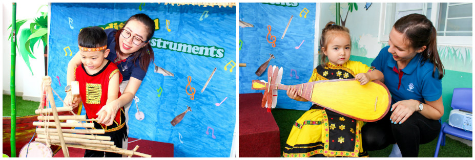

Các điều kiện ảnh hưởng tới sự phát triển nhân cách của trẻ mẫu giáo
Để giáo dục nhân cách trẻ mẫu giáo hiệu quả, cần nắm được những điều kiện nào sẽ ảnh hưởng tới sự phát triển nhân cách của trẻ. Dưới đây là 4 yếu tố chủ yếu ảnh hưởng tới sự hình thành nhân cách trẻ mẫu giáo:
1.Yếu tố di truyền: Đây là yếu tố đóng vai trò tiền đề, là cơ sở cho sự hình thành và phát triển nhân cách ở trẻ mầm non.
2.Yếu tố môi trường: Môi trường bao gồm các điều kiện tự nhiên và môi trường xã hội xung quanh có tác động và cần thiết cho cuộc sống và sự phát triển của trẻ. Về vai trò, môi trường sẽ góp phần tạo mục đích, động cơ, phương tiện và điều kiện cho các hoạt động của trẻ. Tuy nhiên, việc môi trường ảnh hưởng nhiều hay ít tới trẻ sẽ phụ thuộc vào thái độ cũng như năng lực và xu hướng của trẻ đối với môi trường đó.
3.Yếu tố giáo dục: Giáo dục là một yếu tố tác động có mục đích, có kế hoạch, đóng vai trò chủ đạo trong việc hình thành nhân cách trẻ mẫu giáo. Yếu tố giáo dục có thể mang lại những sự tiến bộ mà yếu tố di truyền và môi trường không thể làm được. Giáo dục có thể giúp xây dựng định hướng cho trẻ, thúc đẩy cho trẻ nắm bắt những nhu cầu, động cơ và sự hứng thú của bản thân. Hơn nữa, giáo dục còn có thể tìm ra con đường chân chính cho những tâm hồn, phẩm chất xấu. Tuy nhiên, giáo dục có thành công hay không còn phụ thuộc vào sự tự rèn luyện của mỗi cá nhân.
4.Yếu tố hoạt động cá nhân: Đây là yếu tố giữ vai trò quyết định tới sự phát triển nhân cách của trẻ mẫu giáo. Thông qua những hoạt động cá nhân, sự hứng thú và niềm đam mê trong trẻ sẽ được kích thích và làm nảy sinh những nhu cầu và tâm lý mới. Đồng thời, những kinh nghiệm được tạo ra thông qua những hoạt động này cũng giúp trẻ biến nó thành nhân cách của mình. Vì vậy, ở mỗi độ tuổi nhất định, bố mẹ nên tạo điều kiện và cơ hội cho con tham gia vào những hoạt động khác nhau để kích thích yếu tố hoạt động cá nhân.
Tầm quan trọng của việc giáo dục nhân cách cho trẻ mầm non
Giáo dục nhân cách cho trẻ mầm non có ý nghĩa vô cùng quan trọng trong việc hình thành nền tảng đạo đức sau này của trẻ. Trẻ được giáo dục tốt sẽ lớn lên với những giá trị tốt đẹp nói chung và giá trị truyền thống của Việt Nam nói riêng như biết kính trên nhường dưới, hòa thuận, tôn trọng, hiếu lễ với ông bà, cha mẹ, anh em; thủy chung, nghĩa tình, biết yêu thương đùm bọc đồng bào, biết quan tâm, giúp đỡ những người xung quanh; hiếu học, cần cù, sáng tạo trong lao động… Khoa học tâm lý đã khẳng định, quá trình phát triển đạo đức sau này của trẻ mang rõ dấu ấn tuổi thơ. Đây cũng là giai đoạn đặt nền móng đầu tiên của nhân cách. Chính vì thế, cha mẹ cần chú trọng giáo dục nhân cách cho trẻ trong giai đoạn mầm non ngay từ trong các hoạt động thường ngày của gia đình.
Tầm quan trọng của việc giáo dục nhân cách cho trẻ mầm non
Giáo dục trẻ thông qua việc sinh hoạt hàng ngày
Thông qua các hoạt động sinh hoạt hàng ngày, cha mẹ có thể giáo dục nhân cách cho trẻ mầm non với nhiều đức tính tốt như biết chào hỏi, lễ phép “dạ thưa” với người lớn, giữ lời hứa, biết quan tâm đến mọi người xung quanh, rèn luyện tính kỷ luật luôn đúng giờ,… Ngoài ra, cha mẹ cũng dạy trẻ biết nhường nhịn em nhỏ, giúp đỡ người khác như nhường chỗ trên xe buýt cho người lớn tuổi, phụ nữ mang thai… trong các hoạt động hàng ngày.
Giáo dục trẻ thông qua các hoạt động vui chơi
Trong quá trình vui chơi, trẻ và bạn bè sẽ thường xảy ra những tình huống như tranh giành đồ chơi, đánh nhau… Đây cũng chính là cơ hội để cha mẹ và thầy cô, giáo dục nhân cách cho trẻ mầm non. Cha mẹ và thầy cô có thể dạy trẻ biết cách sẻ chia, hòa đồng với bạn bè như giải thích với trẻ rằng việc tranh giành đồ chơi với bạn là không nên, con có thể để bạn chơi trước, sau đó đến lượt mình và các lần tiếp theo thì con chơi trước sau đó đến lượt bạn.
Giáo dục trẻ thông qua các hoạt động học tập
Chương trình học của trẻ ở bậc mầm non nên ưu tiên thực hành, trải nghiệm nhiều hình thức, nhiều phương tiện với những hoạt động linh hoạt, sáng tạo thông qua hình ảnh, video và các hoạt động ngoài trời như cắm trại, các hoạt động đội nhóm như kéo co, đá bóng… Thông qua đó, trẻ sẽ dần hình thành các kỹ năng, nhận thức, hiểu biết về thế giới xung quanh. Trẻ cũng sẽ được rèn luyện các kỹ năng sống thiết thực như kỹ năng làm việc nhóm, kỹ năng giải quyết vấn đề, kỹ năng giao tiếp,…

Giáo dục trẻ thông qua các hoạt động lao động
Việc tham gia các hoạt động lao động vừa sức cũng là cách giáo dục nhân cách cho trẻ mầm non. Do đó, cha mẹ nên thường xuyên cho con tham gia vào các công việc trong gia đình như tự dọn dẹp đồ chơi sau khi chơi, lau bụi bẩn trên bàn, phụ cha mẹ dọn dẹp chén đĩa sau bữa ăn,… Quá trình này giúp con dần hình thành phẩm chất cần cù, chăm chỉ, tự giác và có tinh thần trách nhiệm. Đồng thời việc tự hoàn thành các công việc được giao trẻ cũng sẽ thấy tự tin hơn về bản thân mình.
Cha mẹ làm gương sáng để trẻ noi theo
Trẻ có khả năng bắt chước rất nhanh và những hành động cư xử của người lớn có thể để lại vết hằn sâu sắc trong tâm trí của mỗi đứa trẻ. Vì vậy, ngoài việc áp dụng các phương pháp giáo dục nhân cách cho trẻ mầm non, bản thân cha mẹ cũng phải là tấm gương sáng để con noi theo. Cụ thể, cha mẹ cần cư xử khéo léo, lịch sự với mọi người xung quanh, tuân thủ đúng luật lệ, quy định, quan tâm và thường xuyên thăm hỏi ông bà,…